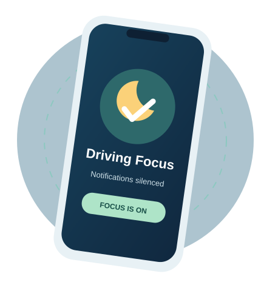

Your Drive.
Your Control.
Stay connected later. Stay in control now.
Driving means freedom and independence. Putting your phone away is one simple way to protect both. Keep your attention on the road and let messages wait.

It's more than just a message.
Checking your phone takes your eyes and attention away from driving. In 2024, crashes involving distracted drivers resulted in 3,208 deaths in the United States (NCSA, 2026a).
Sources: NCSA (2026a), NCSA (2026b), and NHTSA (n.d.).
Three simple steps before every drive.
You don't need a big change to get started. Make these steps part of your normal routine.
Silence notifications
Use Driving Focus or Do Not Disturb before starting the car.
How to set it up →Keep the phone away
Put your phone in your bag or a pouch where you won't reach for it.
Explore the tips →Reply when parked
Wait until you're safely parked before reading or responding to messages.
Make the pledge →Being in control is a good feeling.
For young drivers, getting behind the wheel often means more independence. We want phone-free driving to feel like a normal, confident choice—not just another rule someone tells you to follow.
Our goal is to help prevent injuries associated with texting while driving by encouraging simple, realistic changes in everyday habits.
About our campaign →